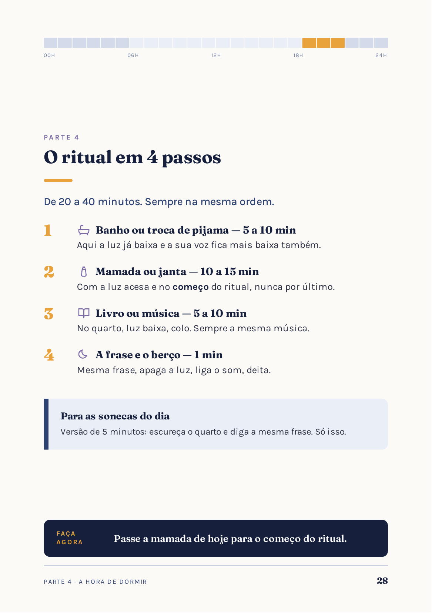
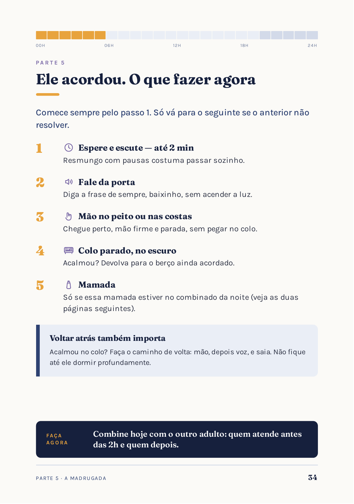
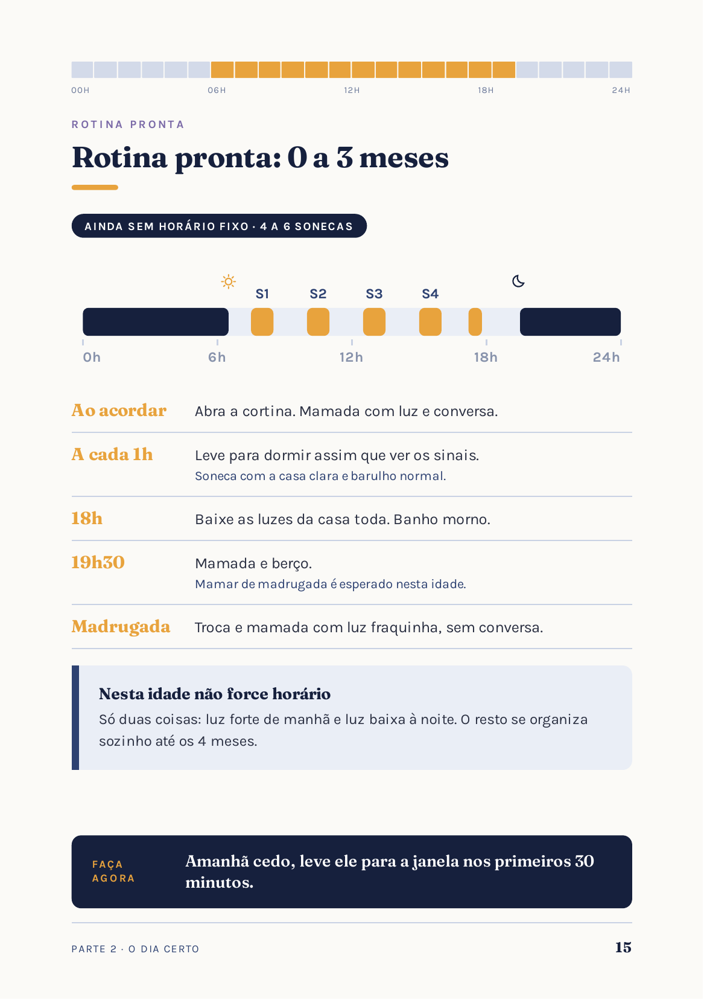
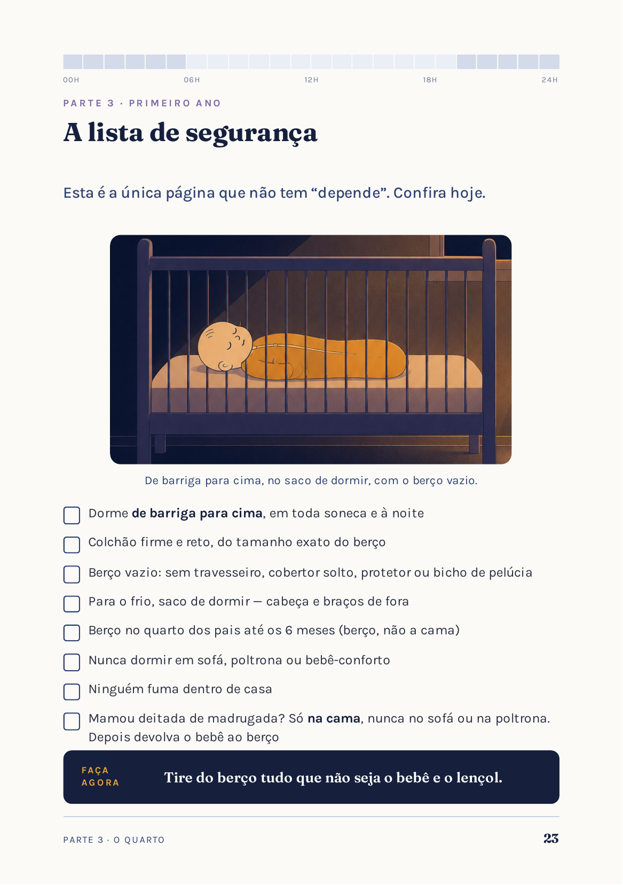
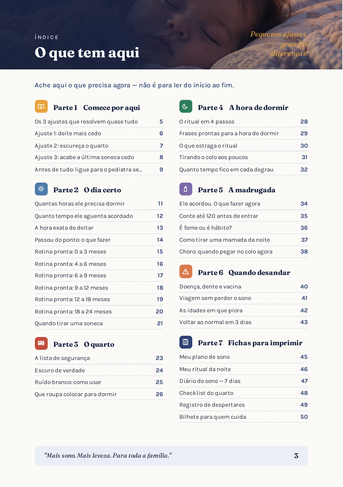

Deite mais cedo
Bebê cansado demais dorme pior. Veja a que horas ele apaga hoje e comece o ritual 30 minutos antes. Faça igual por 3 noites.
Referência: berço entre 19h e 20h. Se hoje é 22h, adiante 15 minutos a cada 2 noites.
Ajude seu bebê a dormir melhor sem deixá-lo chorar sozinho. Um plano prático de 51 páginas para organizar a rotina — com passos claros para aplicar hoje à noite.
Se você chegou até aqui
A falta crônica de sono não deixa só você cansada. Ela mexe com o seu humor, com a sua paciência, com o seu casamento e com a forma como você se sente como mãe.
Nada disso significa que você está fazendo algo errado. Significa que ninguém nunca te explicou como o sono de um bebê funciona.
A pergunta que toda mãe faz primeiro
Não. Essa é a linha que este material não cruza — e é exatamente por isso que ele existe.
Sem pagar nada
Faça um por vez e espere 3 dias antes de mudar o próximo.
Bebê cansado demais dorme pior. Veja a que horas ele apaga hoje e comece o ritual 30 minutos antes. Faça igual por 3 noites.
Referência: berço entre 19h e 20h. Se hoje é 22h, adiante 15 minutos a cada 2 noites.
Está escuro o suficiente quando, ao meio-dia e com tudo fechado, você não consegue ler esta página dentro do quarto.
Quebra-galho de hoje: papel alumínio no vidro com fita crepe. Feio, mas funciona hoje à noite.
Regra única: acorde o bebê até as 16h30. Soneca que passa desse horário atrasa a hora de dormir e encurta a noite.
Nessas noites, antecipe o ritual em 20 minutos para compensar.
O coração do método
Cinco degraus. Você sobe um por vez e nunca deixa ele sozinho chorando. Só suba quando 3 das últimas 5 noites forem tranquilas.
A mamada acontece com a luz acesa, no começo do ritual — e não como último passo antes do berço.
Você está: com ele, mamada no início do ritual.Ele continua no colo até dormir, mas sem balançar e sem andar pela casa.
Você está: com ele no colo, parada.Deita com a mão nele e a voz baixinha. Chorou forte? Pega, acalma, deita de novo — quantas vezes precisar.
Você está: com a mão nele, no berço.Você fica visível ao lado do berço. Toca só se o choro aumentar.
Você está: ao lado dele, visível.A cada 3 noites, afaste a cadeira um pouco em direção à porta, até ele adormecer sozinho.
Você está: no quarto, até o fim.O mapa inteiro é assim: cada página termina numa ação concreta, não em teoria. São 51 páginas e 7 partes, de 0 a 24 meses.
Onde você está agora
O mapa traz uma rotina pronta com horários para cada faixa — é só copiar.
4 a 6 sonecas. Nesta idade não force horário: luz forte de manhã e luz baixa à noite.
De 2 a 4 sonecas, com horários mais previsíveis. É a fase onde a escada de 5 degraus mais resolve.
O mapa mostra como fazer a transição sem estragar a noite.
O que tem dentro
Estas são páginas reais do mapa que você recebe. Nada de mistério.




As 51 páginas, parte por parte
Do primeiro ajuste às fichas para imprimir: o guia foi feito para consultar no momento em que você precisa, sem ter que ler tudo de uma vez.

Quem já aplicou
Mensagens recebidas no Instagram e reproduzidas com autorização. Cada bebê responde de um jeito — os resultados variam conforme a idade, a rotina da família e a aplicação do método.
“Comprei o manual semana passada e já tô vendo diferença! Meu filho tem 6 meses e antes acordava 4, 5 vezes na noite. Agora já está acordando só 1 vez.”
“Segui o passo a passo do manual e em menos de 2 semanas ele já está dormindo por períodos maiores. Hoje conseguimos noites de 6 horas seguidas!”
“Em 10 dias seguindo as orientações já consegui fazer a transição pro berço e hoje ele dorme a noite toda!”
“Em 1 semana já vi diferença. O manual me deu segurança e mostrou que era possível!”
Uma página só, para imprimir e deixar na mesa de cabeceira.
Às 3 da manhã ninguém lembra de método nenhum — você olha o cartão e sabe exatamente o que fazer, do passo 1 ao 5.
O que você leva
Garantia
Baixe, leia as 51 páginas, imprima as fichas e teste com o seu bebê por sete noites. Se sentir que o Mapa não ajudou sua família, é só pedir: devolvemos seu investimento integralmente, sem formulário e sem perguntas.
FAQ
Não. A escada de 5 degraus foi construída para que você acompanhe do primeiro ao último degrau, reduzindo a sua ajuda aos poucos.
Sim. O mapa cobre de 0 a 24 meses e orienta cada fase de acordo com a idade.
Não. A amamentação continua; o material aborda a mamada dentro do ritual.
Cada bebê responde de um jeito. A proposta é aplicar uma mudança por vez e observar a rotina.
O acesso é digital e liberado após a confirmação do pagamento.
Hoje à noite pode ser diferente
O primeiro ajuste do mapa você aplica já na hora de deitar de hoje. São 51 páginas por R$ 27,90, pagamento único.
Acesso liberado logo após a confirmação do pagamento